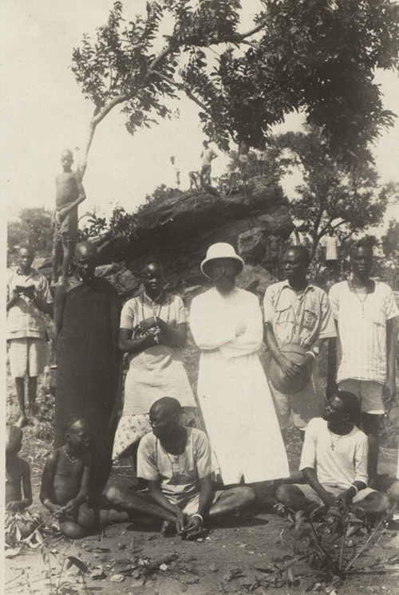
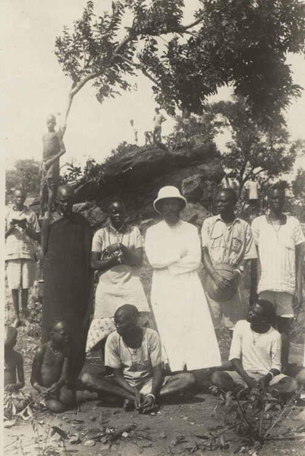

Nato a Recoaro, provincia e dio¬cesi di Vicenza, il 18/3/1890 frequentò il semina¬rio diocesano fino al ginnasio com¬pleto. Nel 1908 entrò nel noviziato di Verona. Ordinato sacerdote nel 1914 partecipò alla prima Guerra mondiale come soldato della terza Compagnia di Sanità, all'ospe¬dale da campo 212 con sede a Verona. Nel 1919 fu mandato a Kitgum, in Uganda; ma l'anno seguente fu trasferito a Rejaf, in Sudan. Dal 9 al 14 agosto 1928 a Rejaf ebbe luogo un convegno che doveva fare epoca nella storia culturale del Sudan Meridionale: la "Rejaf Language Conference", nella quale si determinarono l'ortografia delle lin¬gue locali e le linee principali per i testi scolastici elementari nel Su¬dan meridionale. Con 10 ufficiali governativi e 23 esperti protestanti vi parteciparono 9 Comboniani (Crazzolara, Cardani, Cisco, Kohnen, Gambaretto, Molinaro, Muratori, Olivetti, Spagnolo e Mons. Zambonardi). Fu in quell’occasione che P. Lorenzo fu invitato a pubblicare i suoi studi sulla lingua Bari. Dopo due anni in Italia, fu trasferito nella missione di Isoke, dove prevaleva la lingua Lotuko. Egli fu superiore e parroco dal 1933 al 1939. Nel febbraio 1940 fu trasferito al Seminario di Lacor, Uganda, come insegnante di Morale. Aveva 50 an¬ni. Il 12 giugno, allo scoppio della guerra, fu internato a Katigondo, ma dopo soltanto un mese gli fu concesso di riprendere il suo inse¬gnamento ai seminaristi, trasferiti ad Arua. Passò gli ultimi anni a Kalongo (Uganda) dove morì il 29.9.1978.
Tra i suoi studi più famosi: Bari Grammar (" Grammatica Bari IO, con ricche aggiunte di folklore e nomenclatura) Verona 1933; Bari-English-ltalian Dictionary, Verona (Museum Combonianum No. 11).
Tra i suoi studi più famosi: Bari Grammar (" Grammatica Bari IO, con ricche aggiunte di folklore e nomenclatura) Verona 1933; Bari-English-ltalian Dictionary, Verona (Museum Combonianum No. 11).
 
